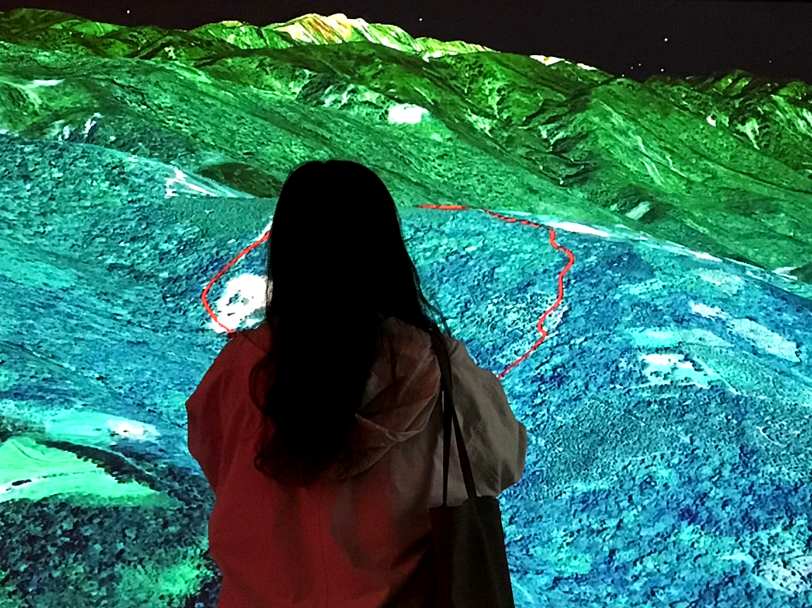
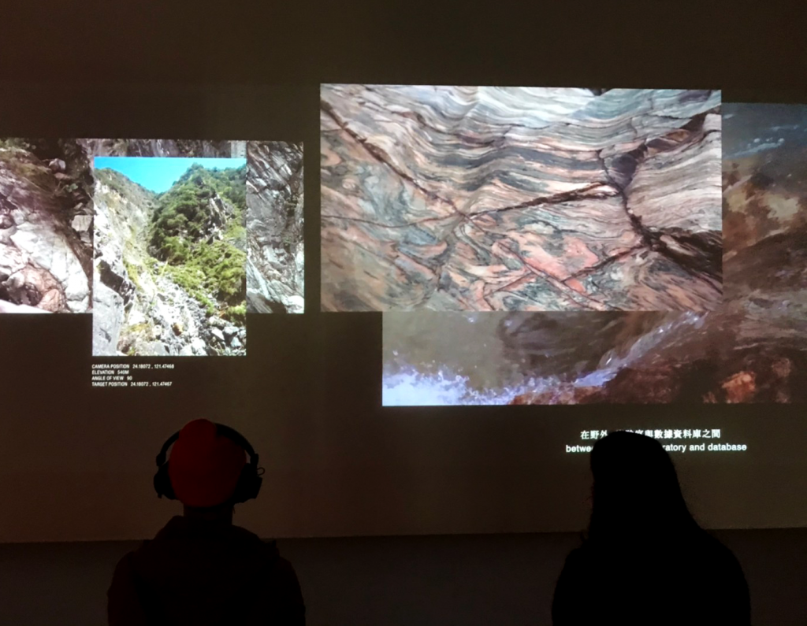
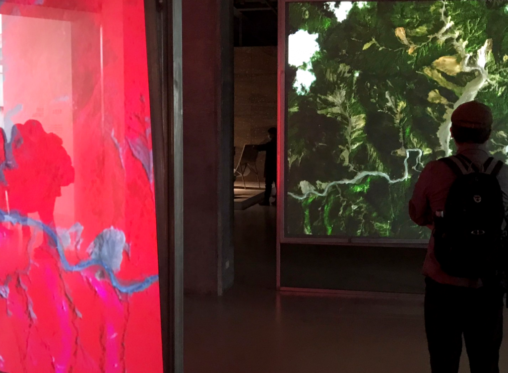
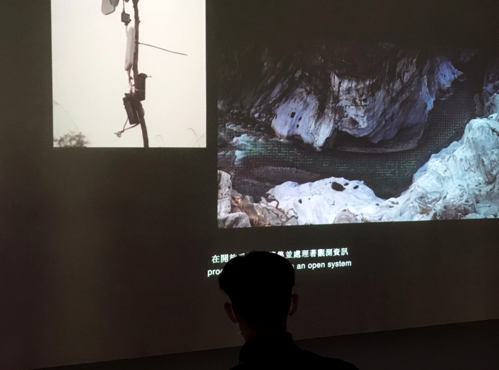
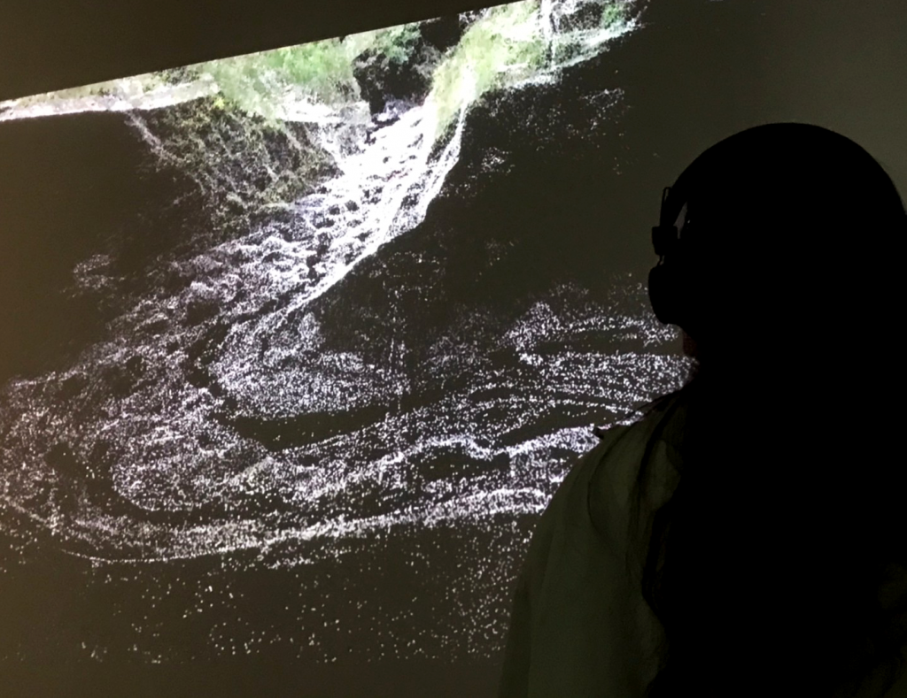
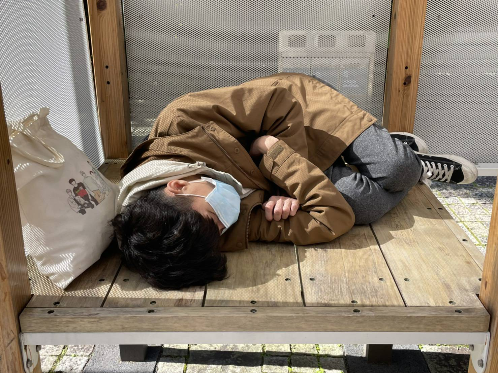

堆疊紀錄科學視角 《參照系》探索地景樣貌
2020-12-09 徐嘉璟
#紀錄片
#蘇郁心
#雙年展
【記者徐嘉璟綜合報導】地景的影像由上萬顆方粒構成，一下聚攏一下擴散。就讀德國萊比錫視覺藝術學院（Academy of Fine Arts Leipzig）的蘇郁心創作紀錄片《參照系》參與2020年台北雙年展，展至明年3月，透過人類科學家、科學觀測儀器與數據視角，呈現不同觀點的地景樣貌，開啟觀眾對生存環境的想像。
《參照系》的畫面橫跨高空、地表及淺層地殼，蘇郁心攜手科學家，以不同角度和尺度呈現人類在「臨界區」的活動。「臨界區」是人類可以觀察或到達的地方，會隨著新事物的發現而不斷擴展，所以沒有固定疆界。蘇郁心表示，作品紀錄科學家在立霧溪的觀測活動，講述人類探索自然的過程，「而不同領域的科學家有不同的信仰和實驗方式。」各領域的科學家以不同方式探究世界，拼湊出我們已認知的地景。

紅色框線為地質探測的關注焦點，而觀眾在鳥瞰的觀看尺度中，可以看出觀察點和周遭環境的關係。 圖／徐嘉璟攝
水紋、激流和河谷的畫面層疊交錯，映出科學家不同尺度的溪流勘測。多組影像輪流投射在螢幕上，觀眾在短時間內只能觀看部分畫面，以局部的影像拼湊、遙想立霧溪的壯麗，藉此強調肉眼觀看的侷限性。蘇郁心補充，他以空拍機、GoPro拍攝不同尺寸的風景，無論經由肉眼或是儀器的鏡頭，都是科學家了解環境的一種方式。而各式儀器的監測畫面，寫著不同單位和屬性的數值，顯現不同科學看待地景的觀點差異。

科學家在觀察野外時，會挑選自己感興趣的主題，蒐集不同尺度的資料，如岩石紋理、溪谷結構等。 圖／徐嘉璟攝
蘇郁心解釋，科學儀器雖增添我們對自然的了解，但也只是一種模型或詮釋方式。他說：「我覺得沒有任何一種科學觀點可以代表世界。」故除了河流，蘇郁心也在展場放映一組地質影像，觀眾站立在三組屏幕之間，凝視前方肉眼可見的岩石紋路，時而轉向左側觀望由地震波轉換的漸層色塊，時而撇向右方鳥瞰地貌全景。觀眾由三方視角「參照」未知的地殼面貌，向下擴展人對地球的垂直認知。

對於同一地點，投影幕分別顯示不同形式的監測畫面，引領觀眾參照不同視角，拼湊出更全面的地景觀點。 圖／徐嘉璟攝
「然而，觀測者的位置又在哪呢？」蘇郁心在紀錄片中提出疑問，同時眼前的河流也疊上一層綠色的數據點，就不具專業知識的觀眾來看，點可能標明地理座標，或表示河流深度。觀眾吳尚沂說：「我好像被吸入數據構成的畫面裡。」他認為，數據顯現的世界讓他感到陌生，但他知道那可能真實存在，是單憑人類能力無法看見的另一種樣貌。

蘇郁心同時羅列出觀測站照片和河流畫面，並於把虛擬數據點加到實體河流上，組合各種觀看地景的觀點。 圖／徐嘉璟攝

儀器將地理特徵濃縮成點，當大量的數據點聚集，觀眾可看清原來溪谷的輪廓，而其輪廓又存有縫隙，是一種不同於肉眼觀察的視角。 圖／徐嘉璟攝
由於資源不足，現今人類開始關切地表環境，而若想解決生存問題，得先用更全面的觀點，了解腳下的土地。觀眾黃麗華說：「我們沒有完全了解地表發生什麼事。」他認為，透過儀器觀看河流，使他能夠跳脫人類視角，完整看清周遭環境。而蘇郁心運用錄像切入科學，呈現不同視角的觀察，就是想打開觀眾對世界的另一番想像。
廢人廢話

徐嘉璟
誤入新聞系の社會四老寶貝，可以叫我夾緊，我會夾給你看，但不要叫我加緊腳步走，很累。
廢廢相報
記者｜吳冠伶 徐嘉璟 陳庭寬
指導｜李法賢
copyright©2020 廢報